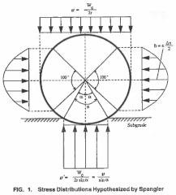

To prevent buried PVC pipe failure, the maximum recommended diametric deflection is 7.5% for sewer/drain pipes and 5% for pressure pipes/electrical conduits (JM Eagle, 2009). The modified Iowa Equation calculator below estimates this deflection under the load of the earth above the pipe and static objects directly overhead. For a fuller description, see the references above. After determining the shallowest depth to prevent this failure mode, the necessary depth across the route is found to meet a recommended slope of 1.25% for drainage (and preventing freezing).
| (in) pipe thickness, t | I = 16 in3 | |
| (kpsi) pipe elasticity, E | E = kpsi | |
| (in) pipe radius, r | PS = psi | |
| (psi) backfill material reaction, E' | 0.041E' = psi | |
| (in) trench depth | R = in | |
| (lbm) weight of object above grade | PB = xxx psi | |
| (lbm/ft3) backfill material density, ρ | f = xxx psi | |
| () time lag factor T | PC = xxx psi | |
| () bedding constant K | K = x.xx | |